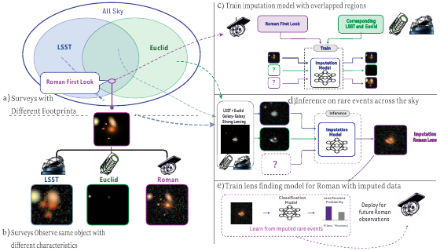
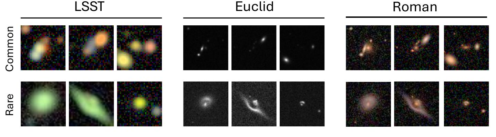

COSMIO: A Benchmark for
Cross-Survey Modality Imputation
Official repository for the NeurIPS 2026 paper.
COSMIO studies how to reconstruct a missing astronomical survey observation from the surveys that are available, and whether those reconstructions remain useful for rare-event science.

TL;DR
Large sky surveys differ in wavelength coverage, resolution, noise, and footprint. Their partial overlap leaves many objects without observations in one or more surveys. COSMIO formalizes this setting as cross-survey modality imputation and provides aligned, forward-rendered observations for 115,000 regular galaxies and 14,825 galaxy-galaxy strong lenses.
This official release contains the COSMIO data protocol, AsynDiff as the only distributed imputation implementation, and the complete downstream Roman strong-lens classification pipeline.
Highlights
- Cross-survey benchmark: aligned LSST, Euclid, and Roman views with realistic survey-specific rendering.
- Regular-to-rare evaluation: train on common galaxies and evaluate distribution shift on strong-lensing systems.
- Downstream science: test whether imputed Roman observations support strong-lens classification.
- Focused source release: reproducible COSMIO readers, AsynDiff training and inference, metrics, manifests, and classifier code.
Contents
The benchmark · Data · Installation · AsynDiff · Downstream classification · Repository layout · Citation
The benchmark
Given observations of an astrophysical source in one or more surveys, the task is to infer how the same source would appear in a missing target survey. COSMIO evaluates both reconstruction quality and scientific utility.
| Track | Training / inputs | Evaluation |
|---|---|---|
| Cross-survey imputation | Regular galaxies with aligned survey views | RMSE, PSNR, and fair CRPS on missing modalities |
| Rare-event generalization | Model trained on regular galaxies | Strong-lensing systems without rare-event retraining |
| Downstream classification | Real or AsynDiff-imputed Roman observations | Roman lens vs. non-lens classification |
CRPS convention
The final NeurIPS 2026 protocol uses fair CRPS: the pairwise spread term
is divided by M(M-1), with a factor of one half, for
M >= 2 independent draws. Training validation and evaluation
share this implementation. Earlier scores using M² must be
recomputed from ensemble draws or rerun before comparison.
Arc extent evaluation
Ground truth and prediction retain all arc components that pass their existing extraction filters (union). Largest-only prediction selection is not supported. Clean-source ground truth and full-observation predictions retain their respective extraction procedures.
Every angular extent error (AEE) table must show valid-pair coverage
alongside conditional AEE: the number of examples with both arcs detected
divided by all evaluated examples, for example 2 / 4 (50%).
Prediction-only detection rate is reported separately.
Data
Download the COSMIO benchmark datasets using the project-provided Kaggle links above.
The benchmark uses aligned objects rendered under three survey configurations. Readers preserve native channels, shared identifiers, deterministic splits, and normalization metadata.

| Survey | Channels | Native size | Role |
|---|---|---|---|
| LSST | 5 | 32 × 32 | Ground-based source modality |
| Euclid | 1 | 64 × 64 | Space-based source modality |
| Roman | 3 | 59 × 59 | Target and downstream modality |
data/
├── regular/
│ ├── run_000/shards/manifest_lre_nonlens.json
│ └── normalization_metadata.json
└── lens/
├── run_000/shards/manifest_lens.json
└── normalization_metadata.jsonInstallation
Python 3.10 or newer is required.
git clone https://github.com/fw-ic/COSMIO.git
cd COSMIO
python -m venv .venv
source .venv/bin/activate # Windows: .venv\Scripts\activate
python -m pip install -r requirements.txt
python -m pip install -e asyn-diffusion
python -m pip install -e vit-lens-classificationAsynDiff: train and sample
The released imputation model supports asynchronous masking over LSST, Euclid, and Roman. The default protocol trains on regular-galaxy run_000 through run_006; run_007 is reserved for downstream protocols.
# Build the sample index and normalization statistics
asyndiff_build_index --config asyn-diffusion/configs/train.yaml
# Train
asyndiff_train_diffusion --config asyn-diffusion/configs/train.yaml
# Reconstruct Roman from LSST + Euclid
asyndiff_sample \
--config asyn-diffusion/configs/train.yaml \
--split val \
--index 0 \
--known lsst,euclidDownstream Roman classification
The downstream package trains a Roman-only Vision Transformer for strong-lens classification using ground-truth Roman observations or saved AsynDiff reconstructions.
# Build a real-Roman baseline manifest
vit_lens_build_real_roman_manifest
# Train and evaluate
vit_lens_train --config vit-lens-classification/configs/real_roman.yaml
vit_lens_evaluate --config vit-lens-classification/configs/real_roman.yamlThe manifest builder is configured by flags, not by a config file. Its defaults write to vit-lens-classification/artifacts/real_roman_manifest.json, which is the data.manifest_path that configs/real_roman.yaml reads; if you pass --output, update the config to match.
For the imputed track, run evaluate_imputation_methods.py with --save-pred-sample-normalized to write the prediction tensors, then build a manifest with vit_lens_build_imputed_roman_manifest --train-results-json <that JSON>.
Across all six configurations under vit-lens-classification/configs/ only three fields differ — experiment.name, experiment.output_root and data.manifest_path — so a configuration selects no experimental variable. The imputation direction is fixed upstream by --known, and the negatives and positives by the builder's --train-negative-source and --eval-source. Set --output to the data.manifest_path of the configuration you intend to train against; nothing checks that the two agree. See the README for the full contract.
Repository layout
asyn-diffusion/ AsynDiff model, data protocol, training, inference
vit-lens-classification/ Roman lens classifier and manifest builders
docs/ Data schema and project-page source
tests/ Release-scope checks
evaluate_imputation_methods.py
evaluate_lensing_arc_metrics.pyRelease scope and reproducibility
- Other imputation implementations evaluated in the paper are not redistributed.
- Datasets, checkpoints, predictions, and experiment runs are hosted or generated separately.
- The repository preserves the complete COSMIO → AsynDiff → Roman classification path.
- CI checks the released package scope and test suite on each push and pull request.
Citation
Cite the accompanying NeurIPS 2026 paper when using the benchmark. To reference this official code repository specifically, use:
@misc{cosmio2026code,
title = {COSMIO: A Benchmark for Cross-Survey Modality Imputation},
year = {2026},
howpublished = {Official code repository},
url = {https://github.com/fw-ic/COSMIO},
note = {Companion code for the NeurIPS 2026 paper}
}License
Code is released under the terms in LICENSE. Dataset usage follows the terms published with the Kaggle release.